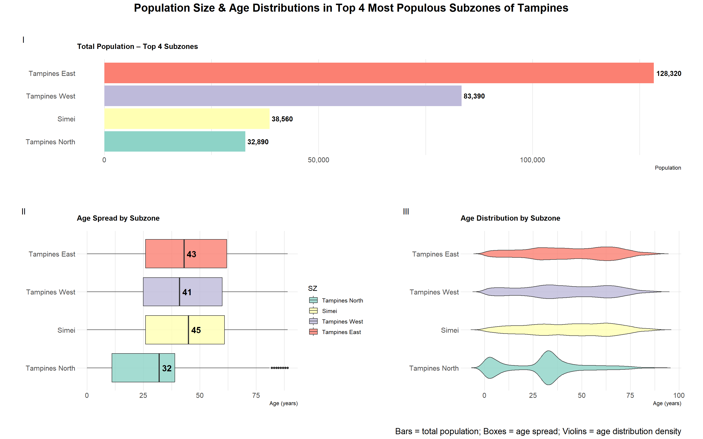

pacman::p_load(ggrepel, patchwork,
ggthemes, hrbrthemes,
tidyverse, ggiraph, plotly,
patchwork, DT, dplyr, scales, forcats, dplyr, grid) Take-home Exercise 1 (Part 2)
Load packages and import data
Load packages
Import data
df <- read_csv("respopagesex2024.csv")Original submission
The original visualization was created by my classmate Andre Ong Jia Kang. Please refer to this link for the original submission.
Data cleaning and preparation
I follow the same data cleaning and preparation procedure as the original submission to ensure the same output.
Adding “Region” column
df <- df %>%
mutate(
Region = case_when(
# Central Region (Core + Rest)
PA %in% c(
"Downtown Core", "Outram", "Sentosa", "Rochor", "Orchard", "Newton",
"River Valley", "Bukit Timah", "Holland Road", "Tanglin", "Novena",
"Thomson", "Marina East", "Marina South", "Museum", "Singapore River",
"Bishan", "Bukit Merah", "Geylang", "Kallang", "Marine Parade",
"Queenstown", "Southern Islands", "Toa Payoh", "Straits View"
) ~ "Central",
# North Region
PA %in% c(
"Central Water Catchment", "Lim Chu Kang", "Mandai", "Sembawang",
"Simpang", "Sungei Kadut", "Woodlands", "Yishun"
) ~ "North",
# North-East Region
PA %in% c(
"Ang Mo Kio", "Hougang", "North-Eastern Islands", "Punggol",
"Seletar", "Sengkang", "Serangoon"
) ~ "North-East",
# East Region
PA %in% c("Bedok", "Changi", "Changi Bay", "Paya Lebar", "Pasir Ris", "Tampines"
) ~ "East",
# West Region
PA %in% c(
"Bukit Batok", "Bukit Panjang", "Boon Lay", "Pioneer", "Choa Chu Kang",
"Clementi", "Jurong East", "Jurong West", "Tengah", "Tuas",
"Western Islands", "Western Water Catchment", "Benoi", "Ghim Moh",
"Gul", "Pandan Gardens", "Jurong Island", "Kent Ridge", "Nanyang",
"Teban Gardens", "Toh Tuck", "Tuas South", "West Coast"
) ~ "West",
# Catch-all for any PAs that didn’t match
TRUE ~ NA_character_
)
)Removing all rows with population sum equal to 0
df2 <- df %>%
group_by(PA) %>%
filter(sum(Pop, na.rm = TRUE) > 0) %>%
ungroup()Visualization
This visualization demonstrates the top 4 sub-zones with highest population in Tampines planning area and their corresponding box plots of age distribution.
# 1) Find & alphabetize your top 4 subzones
top4_sz <- df2 %>%
filter(PA == "Tampines") %>%
group_by(SZ) %>%
summarise(TotalPop = sum(Pop), .groups = "drop") %>%
slice_max(TotalPop, n = 4) %>%
pull(SZ)
alpha_levels <- sort(top4_sz)
# 2) Bar‐chart data (with ordered factor)
bar_data <- df2 %>%
filter(SZ %in% top4_sz) %>%
group_by(SZ) %>%
summarise(TotalPop = sum(Pop), .groups = "drop") %>%
mutate(SZ = factor(SZ, levels = alpha_levels))
p_bar <- ggplot(bar_data, aes(x = SZ, y = TotalPop)) +
geom_col(fill = "darkorange") +
coord_flip() +
scale_y_continuous(labels = comma) +
labs(subtitle = "Total Population – Top 4 Subzones", x = NULL, y = "Population") +
theme_ipsum(plot_margin = margin(8, 8, 8, 8))
# 3) Boxplot data (with same ordered factor)
box_data <- df2 %>%
filter(SZ %in% top4_sz) %>%
mutate(
Age = as.numeric(Age),
SZ = factor(SZ, levels = alpha_levels)
) %>%
select(SZ, Age, Pop) %>%
uncount(weights = Pop)
p_box <- ggplot(box_data, aes(x = SZ, y = Age, fill = SZ)) +
geom_boxplot(alpha = 1.5, show.legend = FALSE) +
coord_flip() +
labs(subtitle = "Age Distribution by Subzone", x = NULL, y = "Age (years)") +
theme_ipsum(plot_margin = margin(8, 8, 8, 8))
# 4) Combine
(p_bar / p_box) +
plot_annotation(
title = "Population Size & Age Distributions in Top 4 Subzones (A–Z)",
caption = "Bars = total pop; Boxes = age spread"
)Makeover

# 1. Get top 4 sub-zones by population
top4_sz <- df2 %>%
filter(PA == "Tampines") %>%
group_by(SZ) %>%
summarise(TotalPop = sum(Pop), .groups = "drop") %>%
slice_max(TotalPop, n = 4)
ordered_levels <- top4_sz %>%
arrange(desc(TotalPop)) %>%
pull(SZ) %>%
rev()
# Color palette (match across plots)
sz_colors <- RColorBrewer::brewer.pal(n = 4, name = "Set3")
names(sz_colors) <- ordered_levels
# 2. Bar chart
bar_data <- df2 %>%
filter(SZ %in% ordered_levels) %>%
group_by(SZ) %>%
summarise(TotalPop = sum(Pop), .groups = "drop") %>%
mutate(SZ = factor(SZ, levels = ordered_levels))
p_bar <- ggplot(bar_data, aes(x = SZ, y = TotalPop, fill = SZ)) +
geom_col(show.legend = FALSE) +
geom_text(aes(label = comma(TotalPop)),
hjust = -0.1,
size = 4,
fontface = "bold") +
coord_flip() +
scale_fill_manual(values = sz_colors, name = "Subzone") +
scale_y_continuous(labels = comma) +
labs(subtitle = "Total Population – Top 4 Subzones", x = NULL, y = "Population") +
theme_ipsum(base_family="sans") +
theme(plot.subtitle = element_text(face = "bold"),
panel.grid.major.y = element_blank())
# 3. Boxplot data
box_data <- df2 %>%
filter(SZ %in% ordered_levels) %>%
mutate(
Age = as.numeric(Age),
SZ = factor(SZ, levels = ordered_levels)
) %>%
select(SZ, Age, Pop) %>%
uncount(weights = Pop)
p_box <- ggplot(box_data, aes(x = SZ, y = Age, fill = SZ)) +
geom_boxplot(show.legend = TRUE, alpha = 0.8) +
stat_summary(fun = median, geom = "text", aes(label = round(..y.., 1)),
size = 5, fontface = "bold", color = "black", hjust = -0.3) +
coord_flip() +
scale_fill_manual(values = sz_colors) +
labs(subtitle = "Age Spread by Subzone", x = NULL, y = "Age (years)") +
theme_ipsum(base_family="sans") +
theme(plot.subtitle = element_text(face = "bold"))
# 4. Violin plot
p_violin <- ggplot(box_data, aes(x = SZ, y = Age, fill = SZ)) +
geom_violin(trim = FALSE, show.legend = FALSE, alpha = 0.8) +
coord_flip() +
scale_fill_manual(values = sz_colors) +
labs(subtitle = "Age Distribution by Subzone", x = NULL, y = "Age (years)") +
theme_ipsum(base_family="sans") +
theme(plot.subtitle = element_text(face = "bold"))
# 5. Combine all three charts
(p_bar / (p_box | p_violin)) +
plot_layout(heights = c(0.6, 1)) +
plot_annotation(
title = "Population Size & Age Distributions in Top 4 Most Populous Subzones of Tampines",
caption = "Bars = total population; Boxes = age spread; Violins = age distribution density",
theme = theme(
plot.title = element_text(hjust = 0.5, size = 18, face = "bold"),
plot.caption = element_text(size = 14)
),
tag_levels = "I"
)Changed the title from a vague and potentially misleading one to
“Population Size & Age Distributions in Top 4 Most Populous Subzones of Tampines.” This explicitly states the selection criteria (population-based) and adds geographic context.Subzones are now sorted by descending total population, which makes comparisons more intuitive.
Added population labels to the bar chart for exact values. Added median age labels to the boxplot to highlight central tendency, improving interpretability.
Assigned consistent subzone colors across all three charts (bar, box, and violin). A shared legend placed centrally on the right helps reinforce this visual mapping.
Included a third panel: a violin plot beneath the boxplot to reveal the density and skewness of age distributions.
Comments
Good design practices
Suitable choice of visualizations to represent quantity and distribution
The use of a horizontal bar chart effectively conveys total population size—an intuitive and direct way to compare the number of residents across subzones. Paired with this is a boxplot showing the age distribution within the same subzones, which illustrates not just the median age but also the range, concentration, and presence of outliers in the population. By combining these two perspectives—how many people live in each area and how their ages are spread—the chart enables a more comprehensive analysis than using either visualization alone.
Alignment of axis components and use of a horizontal layout
Both the bar chart and the boxplot share the same categorical y-axis representing subzones, and the subzones appear in the same order across both visualizations (e.g., Tampines, Simei, Tampines North, etc.). This consistent alignment allows viewers to easily scan across charts and make immediate, accurate comparisons between total population and age distribution for each subzone without reorienting their focus. Additionally, the horizontal layout improves legibility, especially for subzone names, which are quite long and would be harder to read if rotated vertically.
Logical visual hierarchy
The chart’s visual hierarchy reinforces a clear top-down logic that aligns with how viewers naturally process information. By placing the bar chart at the top, it first draws attention to the total population size of each subzone. This is the broad, high-level metric. Beneath it, the boxplot introduces a deeper layer of detail by showing the age distribution, which adds nuance and context to the population figures. This sequence helps direct the viewers to move from general to specific insights: starting with “how many people live here” and then exploring “what is the demographic structure of that population.”
Areas for improvement
Sorting sub-zones in a logical order
The chart displays the top four subzones with the highest population in Tampines, but their arrangement does not follow a consistent or meaningful order—such as descending population size or alphabetical sequence. For instance, Tampines North is positioned above Simei, even though it has a lower population. This weakens the visual impact and does not fully leverage the bar chart’s strength in showing ranked comparisons at a glance. Reordering the bars by population size would improve readability, enhance pattern recognition, and allow viewers to instantly grasp which subzones are more or less populous.
Aligning color coding and adding legend
In the current design, the boxplot uses distinct colors to represent each subzone, but the bar chart displays all bars in the same color. Applying the same color scheme to the bar chart would help visually link the two components, improving overall cohesion and visual tracking. Furthermore, the chart lacks a legend to explain the color assignments, which can create confusion and reduce interpretability, especially if more subzones are added. Including a clear, consistent legend would make the chart more intuitive, accessible, and self-explanatory.
Adjusting title and adding data labels
The original title, “Population Size & Age Distributions in Top 4 Subzones (A–Z),” lacks clarity and precision in a few key ways. First, it does not specify the basis for selecting the top 4 subzones, leaving viewers uncertain about whether the ranking is based on population, age diversity, or another metric. Furthermore, the title omits any geographical context, such as the fact that all subzones belong to the Tampines planning area, which is essential for interpretation.
The original chart doesn’t include any data label. Adding labels such as total population figures in the bar chart and median age values in the boxplot can help enhance interpretability by providing precise values at a glance, eliminating the need for visual estimation and making the chart more informative and accessible.
Reveal distribution patterns more clearly with Violin Plots
While the boxplot effectively displays the median, interquartile range, and outliers, it does not capture the distribution shape or skewness of the data. Adding a violin plot would address this limitation by showing the full density of the age distribution for each subzone. This allows viewers to better understand how age groups are concentrated—whether the population is skewed toward younger or older ages, or if there are multiple peaks. A violin plot provides richer insight into the underlying demographic patterns, making it a more informative alternative for visualizing population spread.